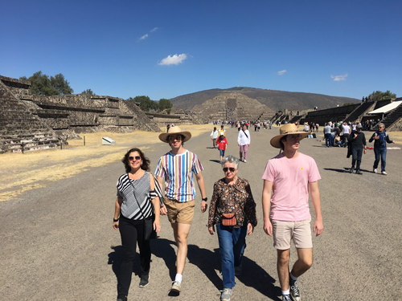

About Me - Scott DeRuiter
The picture to the left shows my family. My eldest son, Nico, is on the right. He is 27 years old and
he is currently studying in a graduate program in New York (Manhattan). My wife is a Spanish Teacher
at Fremont High School; because we work in the same district we have the same vacation days, so it
makes it easier to plan trips. My younger son, David, is on the left. He is 24 years old, and is
currently working in San Francisco. He works as a researcher at UC Law.
My wife and I enjoy time away with our sons. This past summer, Nico and David were able to join us
when we traveled. The last time Nico traveled with us on a trip to Europe was in 2018. We had a
great time on our trip, and hope to be able to travel together soon.

One of our favorite trips in recent memory was our trip to Mexico City (just before Covid hit).
We went during our December break, and we got the chance to bring along my wife's mother. We
visited the Museo Nacional de Antropologia, saw the Palacio de Bellas Artes, and took a day trip
to the pyramids at Teotihuacan. We were there for New Year's Eve, and celebrated by staying up
late to ring in the new year.
 This summer, I got the chance to travel to Spain. While in Spain, we visited the north coast,
seeing some friends in the region of Asturias. This is one of my favorite spots on earth.
The weather is typically mild (while the rest of Spain can be very hot during July and August).
There are miles and miles of coastal trails, and I can hike for days and never repeat a
route, since there are so many options. We had so much fun that we're hoping to return
next summer.
This summer, I got the chance to travel to Spain. While in Spain, we visited the north coast,
seeing some friends in the region of Asturias. This is one of my favorite spots on earth.
The weather is typically mild (while the rest of Spain can be very hot during July and August).
There are miles and miles of coastal trails, and I can hike for days and never repeat a
route, since there are so many options. We had so much fun that we're hoping to return
next summer.